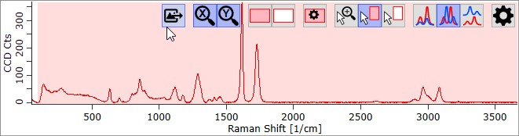
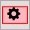
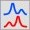

|
光谱查看器
|
光谱查看器

按钮
导出
此功能允许您将当前视图导出为图像文件，或导出到预览中，您可以在其中定义线宽、字体大小等。
See 光谱查看器导出.
Zoom X / Y
自动缩放X/Y轴。
右键单击以打开/关闭图谱更改时的自动X/Y轴缩放。
Set / Clear 掩模
将掩模设置为默认掩模或清除整个掩模。
仅在鼠标设置/清除掩模模式启用时可见。

Load/Save 掩模启用保存或加载掩模。
按用户保存。
Mouse Zoom 模式
如果选中，您只需按住鼠标左键拖动区域即可缩放该区域。
双击以自动缩放X轴和Y轴。
Mouse Set 掩模 模式
如果选中，您可以拖动区域（以红色背景绘制）来设置掩模像素。
这样您可以定义哪些光谱像素应用于搜索或添加到自定义数据库。
双击查看器以将区域重置为搜索选项中定义的默认区域。
Mouse Clear 掩模 模式
如果选中，您可以拖动区域（以红色背景绘制）来清除掩模像素。
---
Same Y Axis
如果选中，所有光谱使用相同的Y轴。
叠加 Y Axes
如果选中，每个光谱有自己的Y轴，并将自动缩放以适应窗口高度。

堆叠Y轴如果选中，每个光谱有自己的Y轴，并将彼此堆叠。
---
选项
Show 图例
显示或隐藏图例。
Show X/Y Axis
显示或隐藏X/Y轴绘图。
Hide Rayleigh Peak
如果选中，自动缩放X轴时将隐藏瑞利峰。您可以随时使用鼠标滚轮（并按住键盘上的Ctrl键）来缩放X轴。
使用鼠标缩放
Zoom Y Axis
您可以简单地转动鼠标滚轮来缩放Y轴。
Zoom X Axis
按住Ctrl键将缩放X轴。
在鼠标缩放模式下，您也可以拖动矩形来缩放该区域。
双击查看器将自动缩小。
您可以将鼠标移动到某个位置并按下键盘上的空格键。
这将放大鼠标光标所在的区域。